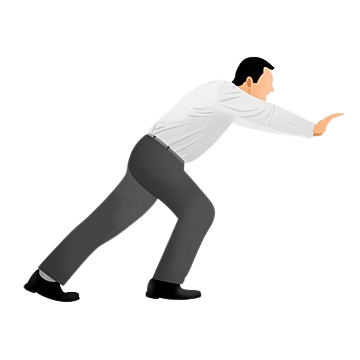
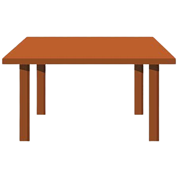

🎯 Percobaan: Manusia Mendorong Meja
Perhatikan bagaimana gaya otot dapat menggerakkan benda!
LANTAI

MANUSIA

MEJA
📊 Data Pengamatan
Kekuatan Otot:
-
Waktu Tempuh:
-
Gaya yang Dihasilkan:
-
Status:
Siap
💡 Kesimpulan
Gaya otot adalah gaya yang dihasilkan oleh makhluk hidup menggunakan tenaga dari otot tubuh.
Semakin kuat gaya otot yang diberikan, semakin cepat dan jauh benda dapat bergerak.
Gaya otot dapat mengubah: benda diam menjadi bergerak, arah gerak benda, dan menghentikan gerak benda.